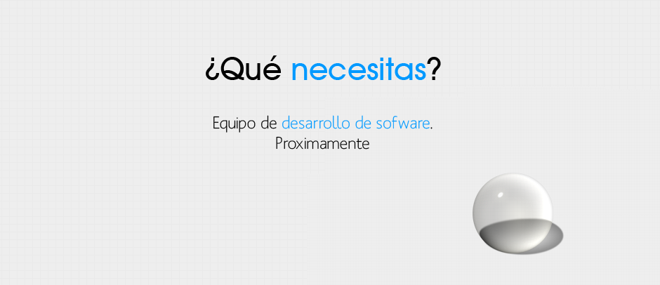
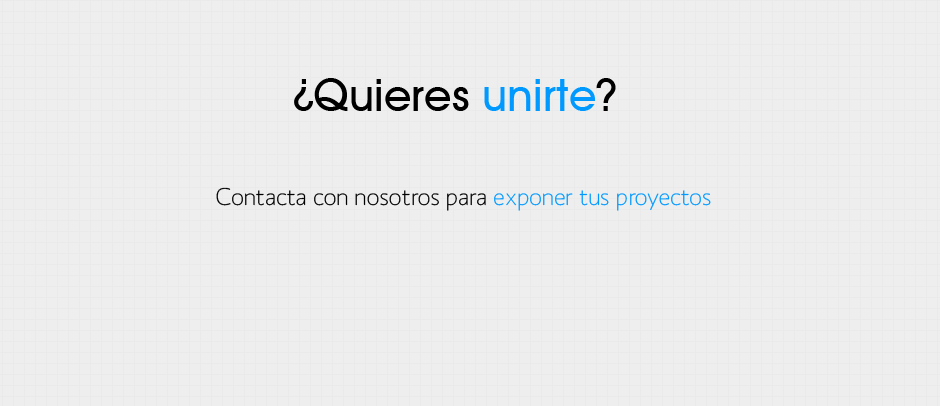

{% extends "base.html" %}

{% block extraJS %}
<!-- Link to the Nivo Slider CSS style -->
<link rel="stylesheet" type="text/css" media="screen" href="../static/css/nivo-slider.css"  />
<!-- Link to the Pretty Photo CSS style -->
<link rel="stylesheet" type="text/css" media="screen" href="../static/css/prettyPhoto.css" />
<link href="http://ajax.googleapis.com/ajax/libs/jqueryui/1.8/themes/base/jquery-ui.css" rel="stylesheet" type="text/css"/>
 <script src="http://ajax.googleapis.com/ajax/libs/jquery/1.5/jquery.min.js"></script>
 <script src="http://ajax.googleapis.com/ajax/libs/jqueryui/1.8/jquery-ui.min.js"></script>
<!-- Nivo Slider script -->
<script src="../static/js/jquery.nivo.slider.pack.js" type="text/javascript"></script>
<!-- PrettyPhoto script -->
<script src="../static/js/jquery.prettyPhoto.js" type="text/javascript"></script>
<!-- Nivo Slider options -->
<script type="text/javascript">
$(window).load(function() {
    $('#slider').nivoSlider();
});
</script>
<!-- PrettyPhoto options -->
<script type="text/javascript" charset="utf-8">
	$(document).ready(function(){
		$("a[rel^='prettyPhoto']").prettyPhoto();
	});
</script>
<script type="text/javascript" charset="utf-8">
  $(document).ready(function() {
    $("#accordion").accordion({active: false},{autoHeight: false},{collapsible: true});
  });
</script>
{% endblock %}{% block content %}
    <!-- Begin slider -->
    <div id="slider">
   	  
   	  
   	  
	</div>
    <!-- Begin captions -->
	<div id="htmlcaption" class="nivo-html-caption">
    	<strong>Este</strong> es un ejemplo de slide <em>HTML</em> con <a href="#">una referencia</a>.
	</div>
    <!-- End captions -->
    <!-- Begin control bar -->
  	<div id="control_bar"></div>
    <!-- End control bar -->
    <!-- End slider -->
    <h1>Hola! Bienvenido a <span style="color:#08a5ff;">EtCaterva</span>, grupo de creacion software.</h1>
    <div class="dotted_line"></div>
    <!-- Begin top content -->
    <div id="top_content">
    	<div id="top_content_left_coloumn">
		<div id="accordion" style='margin-top:20px'>
 <!-- Parte encargada de mostrar las noticias de la base de datos de manera ordenada -->
   <!--<?php

   $conexion = mysql_connect("db384496120.db.1and1.com", "dbo384496120", "1234abcd");
   mysql_select_db("db384496120");
   $RQuery = mysql_query("Select * from News ORDER BY date DESC", $conexion) or die(mysql_error());

    while($row = mysql_fetch_assoc($RQuery)){

	echo "<h5><a href='#'>".$row["title"]."</a></h5>";
        echo "<div><p class='top_content_text'>".nl2br($row["text"])."</p></div>";
    }

    ?>-->

	    </div>
        </div>
        <div id="top_content_right_coloumn">
        	<h2>Proyectos recientes</h2>


 <!-- Parte encargada de mostrar los proyectos mas recientes -->
   <!--<?php

   $RQuery = mysql_query("SELECT * FROM Projects ORDER BY date DESC LIMIT 9", $conexion) or die(mysql_error());

    while($row = mysql_fetch_assoc($RQuery)){

    $image= $row['image'];

    if($image == "") $image = "pic2.jpg";
    echo "<a href='project.php?id=".$row["idproject"]."'></a>";

    }

    ?>-->

    </div>
    </div>
    <!-- End top content -->
    <div class="clear"></div>
    <div class="dotted_line" style='margin-top:20px'></div>
    <!-- Begin bottom content -->
    <div id="bottom_content">
    	<div id="bottom_content_left_coloumn">
        	<h2>Usuario aleatorio</h2>
			
			 <!--<?php

				$RQuery = mysql_query("SELECT * FROM Users ORDER BY RAND()", $conexion) or die(mysql_error());

				$row = mysql_fetch_assoc($RQuery);
				$image = $row['image'];
				
				if($image == NULL) $image = "pic7.jpg";
				echo "<p class='bottom_content_text'><a href='user.php?id=".$row['iduser']."'></a>".$row['descr']."</p>";	

    ?>-->
			
        </div>
        <div id="bottom_content_mid_coloumn" class="fb-like-box" data-href="https://www.facebook.com/pages/EtCaterva/254267391304775" data-width="300" data-show-faces="true" data-stream="false" data-header="false">
      	</div>
		<div id="bottom_content_right_coloumn">
<script src="http://widgets.twimg.com/j/2/widget.js"></script>
<script>
new TWTR.Widget({
  version: 2,
  type: 'profile',
  rpp: 4,
  interval: 30000,
  width: 300,
  height: 170,
  theme: {
    shell: {
      background: '#adadad',
      color: '#000000'
    },
    tweets: {
      background: '#ffffff',
      color: '#000000',
      links: '#00d9ff'
    }
  },
  features: {
    scrollbar: false,
    loop: false,
    live: false,
    behavior: 'all'
  }
}).render().setUser('EtCaterva').start();
</script>
      		</div>
    </div>
    <!-- End bottom content -->
    <div class="clear"></div>
    <div class="dotted_line"></div>
{% endblock %}
